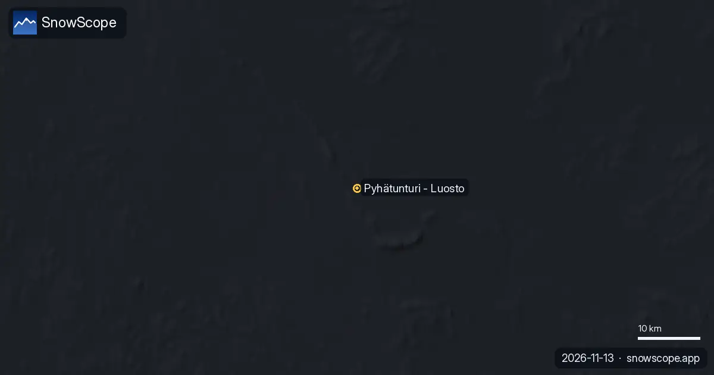

Pyhätunturi - Luosto: snö i dag
Pyhätunturi - Luosto: snö i dag. Runt Pyhä och Luosto är snön fläckvis och tunn. På morgonen den 13 november mätte väderstationen i Pelkosenniemi, 22 …
Snödjup i Pyhä och Luosto: 0 till 9 cm runt fjällen, en snörik vecka framåt (14 november 2026)

Runt Pyhä och Luosto är snön fläckvis och tunn. På morgonen den 13 november mätte väderstationen i Pelkosenniemi, 22 km bort på 156 m, 1 cm; Sodankylä Tähtelä mätte 0 cm; Kemijärvi flygplats, på 208 m, hade 9 cm och Savukoski 6 cm. Vår historik från 46 vintrar ger 15 cm som normalt snödjup här den 14 november, så området ligger efter. De kommande sju dagarna borde ändra på det.
En tunn och ojämn start
Stationerna visar två olika november. I söder och öster har Kemijärvi och Savukoski haft ett tunt snötäcke hela veckan, nu 6 till 9 cm. I väster och norr är Sodankylä och Pelkosenniemi nästan barmark. Fjällen ligger mittemellan, och högre, så de har troligen lite mer än byarna.
Vi uppskattar nysnön de senaste sju dagarna till mindre än 1 cm, så det här är gammal snö, inte ny.